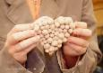

- Wir über uns
- Leitbild
- Kursangebot
- Angebote für Geflüchtete
- Kindergeburtstage
- "Unsere Welt braucht eineTherapie", Gesprächsabend am 22. Juni
- BGZ Sommerfest am 23. Juni
- Tanztheater "Weltenspringer" für Kids, Aufführung am 25. Juni im Rieckhof
- Ausstellungen
- Literaturcafé im Striepensaal
- AG Süderelbe-Archiv
- Kulturtage Süderelbe 2017 - 03. Nov. bis 19. Nov.
- Fortbildung zur Sprachförderkraft mit künstlerischen Mitteln
- Puppentheater Kollin Kläff: Termine ab Oktober 2017
- Kontakt / Impressum
- Hier finden Sie uns
- BGZ Süderelbe
- Links
- Archiv
Wir über uns

Das Kulturhaus Süderelbe wird betrieben von dem gemeinnützigen Verein "Kulturhaus Süderelbe e.V." Es wird über die Stadtteilkulturmittel der Kulturbehörde Hamburg bzw. das Bezirksamt Harburg zum großen Teil finanziert; Projektmittel ergänzen die Finanzierung.
Wer unsere Arbeit unterstützen möchte, kann mit dem jährlichen Beitrag von 24,- € Mitglied werden. In der Mitgliederversammlung unseres Vereins am 12. November 2015 wurde der Vereinsvorstand wie folgt neu gewählt:
- 1. Vorstand
- Stephan Kaiser
- 2. Vorstand
- Hannelore Bobeck-Niculescu
- Schatzmeister
- Winfried Wöhlke
Das Kulturhaus Süderelbe befindet sich direkt am S-Bahnhof Neugraben im ersten Stockwerk des BGZ Süderelbe und ist über einen Fahrstuhl barrierefrei zu erreichen.
1980 - 2017
37 Jahre Kunst- und Kulturhaus Süderelbe e.V.
Kultur vor Ort
Kultur in all seinen Facetten - Sprache , Tanz, Musik, Theater und bildende Kunst sind nur ein Teil davon - begleiten die Menschheit seit ihrer Wiege. Sie gehört zum Menschen wie seine Haut. Durch unsere gesellschaftliche Entwicklung mit anderen Prioritäten geht, zum Teil unbemerkt, mehr und mehr unserer Fähigkeit zu Kreativität verloren.
Um Kultur für jeden zugänglich zu machen und selbst zu gestalten, ist der gemeinnützige Verein "Kulturhaus Süderelbe e.V." entstanden.
Vielleicht haben auch Sie Freude an aktiver Vereinsarbeit. Lernen Sie das Kulturhaus-Team und die vielen Möglichkeiten kennen, die die ehrenamtliche Tätigkeit in einem Verein bietet!
Kulturhaus Süderelbe e.V. | Am Johannisland 2 | 21147 Hamburg
Tel.: 040 - 796 72 22
Fax: 040 - 796 00 48
Email: info@kulturhaus-suederelbe.de
Web: kulturhaus-suederelbe.de
Der Kunst- und Kulturverein "Kulturhaus Süderelbe e.V." bietet ein umfangreiches Programm in den Bereichen bildende Kunst, Musik, Theater, Bewegung, Literatur und Sprache.

Kulturhausarbeit
Das Kulturhaus Süderelbe bietet seinen Besuchern einen Freiraum im Alltag, in dem sie von Fachkräften künstlerisch angeleitet, begleitet und unterstützt werden. Unser Programm soll Lust machen, sich auf sehr unterschiedlichen Feldern kreativ auszuprobieren, künstlerische Fertigkeiten auszubilden und zu vertiefen. Die individuelle Förderung in der Gruppe bietet die Möglichkeit, Anregungen zu sammeln, sich auszutauschen und sich geborgen zu fühlen.
Die daraus entstehenden Ideen und Kräfte wollen wir nutzen, Anstöße zur Gestaltung unseres lokalen Umfelds zu geben, künstlerisch-kreative Projekte im öffentlichen Raum anzustoßen und über das Interesse an künstlerischem Arbeiten die Menschen in der Region zum Mitwirken zu motivieren und ihre Identifikation mit dem Stadtteil zu stärken.
Kooperationen
Um diese Ziele zu erreichen, arbeiten wir eng mit unseren Nachbarn im Bildungs- und Gemeinschaftszentrum Süderelbe (BGZ Süderelbe) und anderen Kooperationspartnern zusammen.
Angebote unserer Mitglieder
- Vereinigung Süderelbe e.V.
- 040 - 70101728
- www.vereinigung-suederelbe.de
- MGV "Sängerlust Scheideholz" v. 1919 e.V.
- 040 - 7016387
- www.chorverband-hh.de
- Ring für Heimattanz e.V.
- 040 - 7016515
- www.heimattanz.de
- Verein "Plattdüütsch leevt"
- 040 - 79751573
- www.plattdueuetsch-leevt.de
- Gemischter Chor Süderelbe "Die Evergreens"
- 040 - 7015544
- www.chorverband-hh.de
- Bücherhalle Neugraben
- 040 - 7017622
- www.buecherhallen.de/neugraben/
- Kulturkreis Süderelbe e.V.
- 040 - 70112001
- www.kulturkreis-suederelbe.de
Kinder und Jugendliche
Kinder und Jugendliche können alle Musikangebote, die Kindermal- und Töpferschule, das Kindertanzen und, ab 12 Jahren, auch alle anderen Nachmittagskurse nutzen. Die Abrechnung ist über das Hamburger Bildungspaket möglich. Einzelheiten bitte im Büro erfragen. Gerne erarbeiten wir Angebote zu unseren Themen passend für Ihre Gruppen.
Literatur
Im Striepensaal bietet das Kulturhaus jeden 1. Sonntag im Monat von 16-18 Uhr das Literaturcafe mit Dieter Wehrbrink kostenfrei an.
Weitere Informationen s. unter: Literaturcafe im Striepensaal und Tel. 040 702 55 06.
Kulturtage Süderelbe 2017
In bewährter Weise sollen die "Kulturtage Süderelbe" sowohl eine Plattform für erfahrene lokale Kulturveranstalter sein als auch Amateuren einen schützenden Rahmen bieten, um sich in der Öffentlichkeit mit einem Programmbeitrag zu präsentieren. Weitere Informationen s. Kulturtage Süderelbe 2017.
Das Kulturhaus Süderelbe wird gefördert von der Kulturbehörde Hamburg über das Bezirksamt Harburg. Mit einer Spende oder einer Mitgliedschaft im Verein können Sie unsere Arbeit unterstützen. Eine Spendenbescheinigung kann erstellt werden.